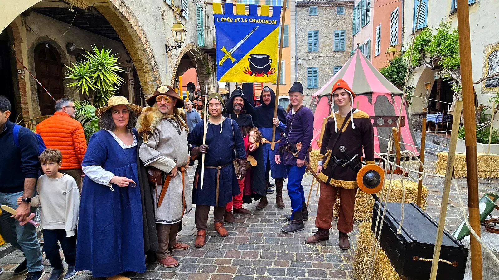
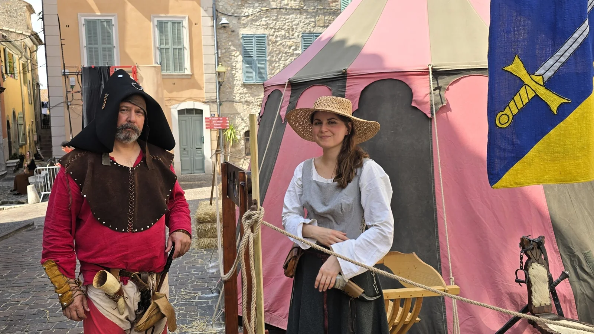

Reconstitution historique
La vie de camp d’une mesnie médiévale
Un camp installé, habité et animé du matin au soir : cuisine au feu, artisanat, héraldique, armes, échanges avec le public. Nous participons aux fêtes médiévales et aux reconstitutions dans les châteaux, les villages anciens et les cadres champêtres, dans la vallée du Rhône et le sud de la France.
- Camp
- installé et animé
- Public
- familles et visiteurs
- Zone
- vallée du Rhône et sud de la France
Voir, toucher, comprendre
Le camp n’est pas un simple décor. Il est habité : on y cuisine, on y travaille, on y explique les objets, les gestes et les usages. Le public observe, questionne et participe.
Des modules courts, lisibles, interconnectés
Chaque animation se combine aux autres dans le campement ; certaines peuvent aussi être proposées seules. Nous sommes tous bénévoles, chacun avec sa spécialité : les animations présentées dépendent des membres présents le jour de l’événement.
Pour les organisateurs de fêtes médiévales et de sites historiques
Un campement vivant, à sa place dans votre événement.
Fête médiévale, journées du patrimoine, reconstitution dans un château ou un village ancien : vous fixez la date, le lieu et la durée, nous arrivons avec le camp, le matériel et les personnages. Association loi 1901, nous intervenons dans la vallée du Rhône et le sud de la France : le camp a déjà été accueilli à Biot, Crest, Avignon, Villeneuve-Loubet et Saint-Cézaire-sur-Siagne.
- Le lieu d’abord. Le camp s’installe de préférence en herbe ou en terre, dans un cadre historique ou champêtre : c’est ce qui rend l’immersion crédible, pour le public comme pour nous.
- Logistique. Nous apportons tentes, mobilier, matériel et costumes ; vous prévoyez l’emplacement, un point d’eau et du bois pour la cuisine.
- Public. Familles, visiteurs de fêtes et de sites patrimoniaux, passionnés : le discours s’adapte à qui s’arrête.
- Formats. Journée ou week-end au sein de votre programmation ; ponctuellement, un atelier pour une classe ou une médiathèque.
- Pédagogie. On explique les objets et les gestes, on fait toucher, on répond aux questions : la transmission plutôt que le spectacle en boucle.
En pratique
Vous prévoyez
- un terrain de préférence en herbe ou en terre, d’environ 200 m² pour le camp, plus 50 m² pour la lice de combat ;
- un point d’eau à moins de 100 m et un demi-stère de bois pour la cuisine ;
- une quinzaine de bottes de paille pour délimiter le camp et la lice (nous avons piquets et cordages) ;
- des sanitaires à proximité et, sur un week-end, une surveillance du camp la nuit.
Nous apportons trois à cinq tentes, l’auvent cuisine avec ses chaudrons et sa table à feu, le râtelier d’armes, le matériel des ateliers et les costumes. De six à quatorze membres selon la date ; nos repas et notre transport sont compris. Devis sur demande.
Journée
Le camp installé dès le matin, ou la veille. Les ateliers tournent en continu de 10 h à 18 h ; un ou deux temps forts — duel judiciaire, initiation à l’escrime — se placent à l’heure de votre programme.
Week-end
Une partie du camp s’installe la veille ; animations samedi et dimanche de 10 h à 18 h, défilé avec les troupes si votre programme en prévoit un. Nous vivons sur le camp : nous y dormons, cuisinons et mangeons.
Ponctuel
Exceptionnellement, un ou deux ateliers sans campement, pour une classe, une médiathèque ou une journée du patrimoine.

Alpes-Maritimes · association loi 1901
Une mesnie de passionnés, un décor vivant
Des personnages hauts en couleur
Plusieurs familles, une mesnie. Chacun tient un rôle, et le public s’adresse à lui comme à un habitant du camp.
Galerie photo
Parlez-nous de votre événement.
Date, lieu et nature du site, public attendu, espace disponible, durée : avec ces cinq éléments, nous vous répondons avec une proposition et un devis.